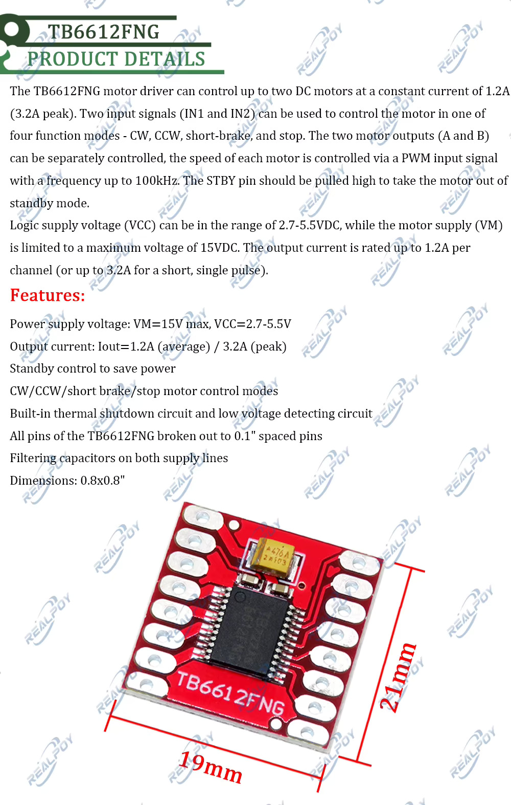

D4
TB6612FNG dual DC motor driver module
untested×2A Toshiba TB6612FNG breakout — the other common small dual-H-bridge driver alongside the DRV8833 boards (D2/D3), higher current-rated but with a higher VCC floor and a lower VM ceiling than either DRV8833 module.
- Board ~19 × 21 mm (0.8 × 0.8"), all TB6612FNG pins broken out to 0.1" headers, filtering caps on both supply lines.
- Two supply pins:
VCC(logic) 2.7–5.5 V,VM(motor) up to 15 V max — unlike the DRV8833 boards, logic and motor power are separate here. - Two independent channels (
A,B), each with its ownIN1/IN2pair selecting CW / CCW / short-brake / stop, plus a per-channelPWMinput (up to 100 kHz) for speed control. - Output current: 1.2 A continuous per channel, 3.2 A peak (single short pulse) — noticeably higher continuous rating than the DRV8833's 1.5 A/channel once you account for the DRV8833 figure being closer to a peak spec.
STBY: pull high to take the chip out of standby; this is shared across both channels (one standby pin, not per-channel).- Built-in thermal shutdown and low-voltage detection.
To verify:
- Confirm VCC (logic) and VM (motor) are wired to the right pins — easy to mix up coming from the single-supply DRV8833 boards
- Confirm STBY pull-up before expecting any output
- Bench-test CW/CCW/brake/stop against an M2 motor on channel A, then channel B
- Decide whether this replaces or complements the DRV8833 boards (D2/D3) as the default small motor driver going forward
{kind=link}
